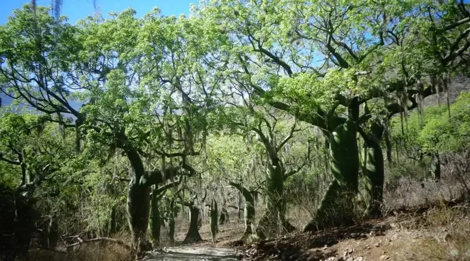

LOJANOVA 16/16 · Provincia de LojaReseña histórica · consultar fuente oficial ↗Territorio y producción · Prefectura ↗Descubre su oferta ↓
Sozoranga
Oficios, tierra y memoria
Historia e identidad
Creado como cantón en 1975, Sozoranga mantiene una tradición agropecuaria y artesanal, expresada en la alfarería, los tejidos y el hilado. La agricultura, ganadería y café de altura acompañan sus oficios tradicionales.
Su oferta en Lojanova
Estamos consultando los productos y categorías publicados de este cantón.

—Productos publicados
—Productores publicados
—Categorías con productos
Hecho en Sozoranga
Descubre sus productos.
Consultando la oferta publicada…